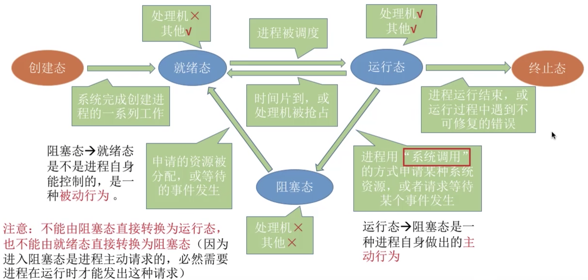
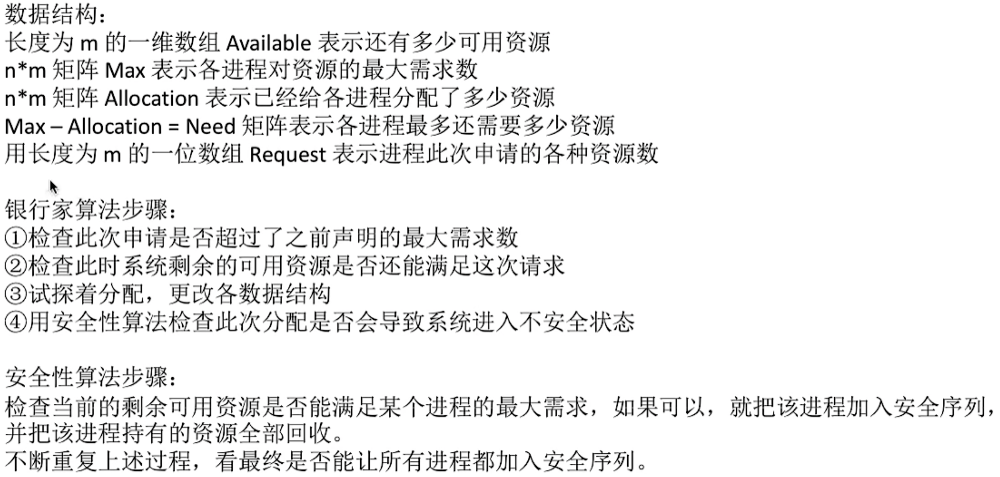

1 进程与线程
1.1 进程的定义、组成、组织方式和特征
程序指一个指令序列。进程可以理解为程序的一次执行过程。
系统为每个运行的程序配置一个数据结构，称为进程控制块PCB，用来描述进程的各种信息（如程序代码存放位置）。程序段、数据段、PCB三部分组成进程实体（进程映像），进程实体也就简称为进程。PCB是进程存在的唯一标志！创建进程实质上是创建进程实体中的PCB，撤销进程就是撤销进程实体中的PCB。
进程也可以理解为进程实体的运行过程，是系统进行系统分配和调度的一个独立单位。
PCB主要包括的信息：和进程相关的数据。
一个系统中通常有很多PCB，为了对他们加以有效的管理，应该用更适当的方式把这些PCB组织起来，进程的组织方式主要有：
- 链接方式：按照进程状态将PCB分为多个队列，操作系统持有指向各个队列的指针。
- 索引方式：按照进程状态建立几张索引表，操作系统持有指向各个索引表的指针。
进程的特征主要有：
- 动态性：进程是程序的一次执行过程，动态产生、变化和消亡。
- 并发性：内存中有多个进程实体，各进程并发执行。
- 独立性：进程独立运行，独立获得资源，是独立接受调度的单位。
- 异步性：进程按各自独立的、不可预知的速度向前推进。
- 结构性：每个进程都会配置一个PCB，然后一个进程实体由程序段、数据段和PCB组成。
1.2 进程的状态与转换
三种基本状态：
- 运行态（Running）：占有CPU，正在CPU上运行。单核环境下每一时刻最多只能有一个处于运行态的进程。
- 就绪态（Ready）：已经具备运行条件，但是没有空闲CPU，暂时不能运行。此时进程拥有除CPU以外的所有需要资源。一旦获得CPU执行权就立即进入运行态。
- 阻塞态（Waiting/Blocked）：因为等待某一事件，暂时不能运行。如等待操作系统分配打印机、等待读磁盘操作的结果等。
另外两种状态：
创建态（New）：进程正在被创建，操作系统为进程分配资源、初始化PCB。
终止态（Terminated）：进程正在从系统中撤销，操作系统会回收进程拥有的资源、撤销PCB。
进程状态的转换：

1.3 进程的控制
进程的控制就是要实现进程状态之间的状态转换。
进程控制使用原语（Primitive）来实现，原语运行在核心态，特点是执行期间不允许中断，只能一气呵成，即原子操作。原语采用「开中断指令」和「关中断指令」实现。开/关中断指令权限非常大，是只能在核心态下执行的特权指令。
原语的主要类型有：
- 创建原语
- 撤销原语
- 阻塞原语
- 唤醒原语
- 切换原语
无论哪个原语，要做的事情就是三类：
更新PCB中的信息。
- 所有的进程控制原语一定会修改进程状态标识。
- 剥夺当前运行进程的CPU使用权必然需要保存进程的运行环境。
- 某进程开始运行前也必然要恢复其运行环境。
将PCB插入合适的队列。
分配/回收资源。
1.4 进程通信
进程通信指进程之间的信息交换和传递。
进程是分配系统资源的单位，因此各进程拥有各自独立的内存空间。为了保证安全，一个进程不能直接访问另一个进程的地址空间，但是进程之间的信息交换又是必须的，操作系统提供了一些方法来保证进程间的安全通信。
- 共享存储
操作系统可以为两个进程提供一个共享空间，让两个进程都可以访问这个地址空间，但是访问必须是互斥的，操作系统负责提供共享空间同步和互斥的工具（比如P、V操作）。
具体分为：
- 基于数据结构的共享：共享空间里规定只能放固定长度的固定数据结构。速度慢、限制多，低级通信方式。
- 基于存储区的共享：内存中划出一块共享存储区，数据形式、存放位置都由进程而不是操作系统控制。速度快，高级通信方式。
- 管道通信
管道（pipe）是用于连接读写进程的一个共享文件，其实就是内存中开辟的一个固定的缓冲区。
- 管道只能采用半双工通信，某一时间段只能单向传输。如果想双向传输，需要开辟两个管道。
- 各进程互斥访问管道。
- 数据以字符流形式写入管道，管道写满时，写进程的
write()系统调用被阻塞，等待读进程读走，读完后管道变空，读进程的read()系统调用被阻塞。 - 如果没写满，不允许读。如果没读空，不允许写。
- 数据一旦被读出就被抛弃，所以读进程最多只能有一个，否则会读错数据导致丢失等错误。
- 消息传递
进程间的数据交换以格式化消息（Message）为单位，通过操作系统提供的「发送消息」/「接收消息」两个原语进行数据交换。
消息由消息头和消息体组成（参考网络的报文）。
具体分为：
- 直接通信方式：消息直接传递到接收进程的缓冲队列上。
- 间接通信方式：消息先发送到中间实体（信箱）中，比如SMTP。
1.5 线程和多线程
线程（Thread）是一个基本的CPU执行单元，也是程序执行流的最小单位。引入线程后，不仅是进程之间可以并发，进程内的各线程之间也可以并发，进一步提升了系统的并发度。而且在引入线程后，进程只作为除CPU以外系统资源的分配单元，线程是调度的基本单元。
线程的属性：
- 线程是处理机调度的基本单位。
- 多核CPU中，各个线程可以同时占用不同的CPU。
- 每个线程都有一个线程ID和线程控制块TCB。
- 线程也有就绪、阻塞、运行三种基本状态。
- 线程几乎不拥有系统资源。
- 同一进程内的不同线程共享进程的资源。
- 由于线程会共享进程的内存地址空间，因此同一进程内的线程间通信无需操作系统干预。
- 同一进程内的线程切换，不会引起进程切换，不同进程的线程切换，会引起进程切换，切换同进程内的线程系统开销很小，但是切换进程开销较大。
线程的实现方式：
- 用户级线程（User-Level Thread, ULT）：由应用程序通过线程库实现，所有线程管理工作由应用程序负责，线程切换在用户态下即可完成。
- 内核级线程（Kernel-Level Thread）：内核级线程的管理工作由操作系统内核完成，线程调度、切换等工作由内核负责，因此内核级线程切换必须在核心态下完成。
操作系统只能「看见」内核级线程，因此只有内核级线程才是处理机分配的单位。所以通常采用二者组合的方式将用户级线程映射到内核级线程上。
例如上图的示例中，即使该程序被放到4核心CPU上运行，也最多只能在2个核上并行执行，因为被映射分配到的内核级线程数只有2个。
多线程模型：在同时支持用户级线程和内核级线程系统中，由几个用户级线程映射到几个内核级线程的问题引出的问题。
- 多对一模型：多个用户级线程映射到一个内核级线程，即每个用户进程只对应一个内核级线程。
- 优点：用户级线程的切换在用户态完成，不需要切换到核心态，线程管理系统开销小，效率高。
- 缺点：一个用户级线程阻塞会导致整个进程阻塞，并发度不高，且多个线程不可以在多核CPU上并行执行。
- 一对一模型：每个用户级线程映射到一个内核级线程。
- 优点：并发度高。
- 缺点：频繁切换到核心态，开销大。
- 多对多模型：n用户线程映射到m个内核级线程（n >= m）。
2 调度
2.1 处理机调度的概念和层次
调度（Scheduling）：有一堆任务要处理，系统资源又有限，需要按照某种规则来决定处理这些任务的顺序。
调度的三个层次：
- 高级调度（作业调度）：外存与内存之间的调度。按一定原则从外部存储设备上从处于后备队列的作业中挑选一个（或多个）作业，给他们分配内存等资源，并建立相应的PCB，使它们获得竞争处理机的权利。一个进程的高级调度调入调出都只有一次，调入时机由操作系统决定，调出时机必然是作业运行结束。
- 中级调度（内存调度）：决定将哪个处于挂起状态的进程重新调入内存。引入虚拟存储技术后可以将暂时不能运行的进程调出至外存，等重新具备运行条件后再重新调入内存，目的是提高内存利用率和系统吞吐量。一个进程的中级调度调入调出都可能会发生多次，频率比高级调度要高。
暂时被调入外存等待的进程进入挂起状态。进程的PCB不会一起被调入外存，而是常驻内存，被挂起进程的PCB进入到挂起队列。挂起状态又分为就绪挂起和阻塞挂起，因此还有进程的七状态模型：
- 低级调度（进程调度）：按照特定的方法和策略从就绪队列中选取一个进程，将处理机资源分配给它。进程调度是操作系统最基本的调度，一般操作系统必须配备进程调度，且频率很高，几十ms就发生一次。
三层调度的联系和对比：
2.2 进程调度的时机、切换与过程、方式
进程调度的时机有两种情况：
- 当前运行进程主动放弃处理机。
- 进程正常终止
- 运行过程发生异常而终止
- 进程主动请求阻塞（如等待I/O）
- 当前运行进程被动放弃处理机。
- 分给进程的时间片用完
- 有更紧急的事需要处理（如I/O中断）
- 有更高优先级的进程进入就绪队列
不能进行进程调度与切换的情况：
- 处理中断的过程中。
- 进程在操作系统内核程序临界区中。
- 在原子操作（原语）过程中。
临界资源：一个时间段内只允许一个进程使用的资源。各进程需要互斥地访问临界资源。
临界区（Critical section）：访问临界资源的那段代码。
内核程序临界区一般是用来访问某种内核数据结构的，比如进程的就绪队列（存放各就绪进程的PCB）。内核程序临界区访问的临界资源如果不尽快释放极有可能影响操作系统内核的其他管理工作，因此访问内核程序临界资源期间不能进程调度与切换；但是普通临界区访问的临界资源不会直接影响操作系统内核的管理工作，因此访问普通临界区时可以进行调度与切换。
进程调度的方式分为：
非剥夺调度方式（非抢占式）：只允许进程主动放弃处理机。实现简单开销小但无法及时处理紧急任务，适合早期批处理系统。
剥夺调度方式（抢占式）：更重要或紧急的进程需要使用处理机时立即暂停当前正在执行的进程，从而将处理机分配给更重要紧迫的那个进程。可以优先处理紧急任务，也可以按时间片轮流执行。适合分时和实时操作系统。
狭义的进程调度指选择一个进程到处理机执行，广义的进程调度包含选择一个进程执行和进程切换两个步骤，进程切换主要完成：
- 对原来运行进程各种数据的保存；
- 对新的进程各种数据的恢复。
进程切换是有代价的，频繁进行进程调度、切换会使得整个系统的效率降低，使大部分时间都花在切换进程调度和切换上，真正用于执行进程的时间则减少了。
2.3 调度算法的评价指标
CPU利用率：CPU忙碌时间占总时间的比例。CPU忙碌时间 / 总时间
系统吞吐量：单位时间内完成作业数量。总共完成多少道作业 / 总共花了多少时间
周转时间：
- 周转时间：作业从被提交给系统开始到系统完成为止的时间间隔。
作业完成时间 - 作业提交时间 - 平均周转时间：
各作业周转时间之和 / 作业数 - 带权周转时间：
作业周转时间 / 作业实际运行时间 - 平均带权周转时间：
各作业带权周转时间之和 / 作业数
等待时间：进程/作业处于等待处理机状态的时间之和。
响应时间：从用户提出请求到首次产生响应所用的时间。
2.4 调度算法I
2.4.1 先来先服务
先来先服务FCFS，first come first serve：
- 思想：主要从公平的角度考虑。
- 规则：按照作业/进程到达的先后顺序进行服务。
- 可用于作业调度，也可用于进程调度。用于作业调度时考虑哪个作业先到达后备队列，用于进程调度时考虑哪个进程先到达就绪队列。
- 非抢占式算法。
- 优点：公平，算法实现简单。
- 缺点：排在长作业后面的短作业需要等待很长时间，带权周转时间很大，对长作业有利，对短作业不利。
- 不会导致饥饿（指某进程/作业长期得不到服务）。
2.4.2 短作业优先
短作业优先SJF，shortest job first：
- 思想：追求最少的平均等待时间、最少的平均周转时间、最少的平均带权周转时间。
- 规则：所需服务时间最短的作业/进程先得到服务。
- 可用于作业调度，也可用于进程调度。用于进程调度时称为SPF。
- 非抢占式算法。但也有抢占式版本——最短剩余时间优先算法SRTN，shortest remaining time next。
- 优点：可以得到最短的平均等待时间、平均周转时间。
- 缺点：不公平。对短作业有利，对长作业不利。
- 会导致饥饿。如果短作业源源不断到来，长作业就长时间得不到服务，饥饿时间过长，直接饿死。
2.4.3 高响应比优先
高响应比优先HRRN，highest response ratio next：
- 思想：综合考虑作业/进程的等待时间和要求服务的时间。
- 规则：每次调度时计算各个作业/进程的响应比，选择响应比最高的作业/进程为其服务。
响应比 = （等待时间 + 要求服务时间） / 要求服务时间 - 可用于作业调度，也可用于进程调度。
- 非抢占式算法。只有当前运行作业/进程主动放弃处理机时，才需要调度和计算响应比。
- 优点：综合考虑了等待时间和运行时间。等待时间相同时，要求服务时间短的优先（SJF的优点）；要求服务时间相同时，等待时间长的优先（FCFS的优点）。
- 不会导致饥饿。对于长作业，随着等待时间越来越久，响应比越来越大，更容易被调度，避免了长作业的饥饿问题。
注意：这几种算法主要关心对用户的公平性、平均周转时间、平均等待时间等评价系统整体性能的指标，但是不关心响应时间，也不区分任务的紧急程度，对于用户来说交互性很糟糕。因此这三种算法都更适合于早期的批处理系统，FCFS算法现在还能结合其他算法一起使用。
2.5 调度算法II
2.5.1 时间片轮转
时间片轮转RR，round-robin：
- 思想：公平地、轮流地为各个进程服务，让每个进程在一定时间间隔内都可以得到响应。
- 规则：按照各进程到达就绪队列的顺序，轮流让各个进程执行一个时间片（如100ms）。若进程未在一个时间片内执行完，则剥夺其处理机执行权，将进程重新放到就绪队列尾部重新排队。
- 用于进程调度。只有作业让入内存建立好相应的进程后，才能被分配处理机时间片。
- 抢占式算法。进程未在时间片内执行完就会被剥夺处理机执行权，由时钟装置发出时钟中断来通知CPU时间片已到。
- 优点：公平，响应快，适用于分时操作系统。
- 缺点：高频率的进程切换，有一定的开销，且没有区分任务紧急程度。
- 不会导致饥饿。
注意：
- 若时间片太大，每个进程都可以在一个时间片完成，时间片轮转算法退化为先来先服务算法，会增大进程响应时间。
- 若时间片太小，进程调度、切换频繁发生，系统花费大量时间和资源来处理进程切换，实际用于进程执行的时间会减少。
2.5.2 优先级调度
- 思想：实时操作系统的出现使得越来越多的场景需要根据任务的紧急程度来决定处理顺序。
- 规则：调度时选择优先级更高的作业/进程。
- 可用于作业调度，也可用于进程调度，甚至还可以用于I/O调度。
- 抢占式、非抢占式都有。非抢占式只需在进程主动放弃处理机时进行调度；抢占式需要在就绪队列变化时检查是否发生抢占。
- 优点：用优先级区分紧急程度、重要程度，适用于实时操作系统，可灵活调整对各种作业/进程的偏好程度。
- 会导致饥饿。

就绪队列未必只有一个，可以按照不同优先级来组织不同队列，也可以把优先级更高的进程排在更靠近队头的位置。
根据优先级是否可以动态改变，可以将优先级分为静态优先级和动态优先级两种。
- 静态优先级：创建进程时确定优先级，之后不改变。
- 动态优先级：创建进程时有一个初始优先级，之后根据情况动态调整优先级。
一般来说：
- 系统进程优先级高于用户进程。
- 前台进程优先级高于后台进程。
因此在确定优先级时：
- 操作系统更偏好I/O繁忙型进程，而不是CPU繁忙型进程。I/O设备可以和CPU设备并行工作，I/O繁忙型进程优先级越高越能更早让I/O设备开始工作，提高资源利用率和系统吞吐量。
- 采用动态优先级策略。如果某进程在就绪队列等待时间过长，可以适当提高其优先级；如果某进程占据处理机很长时间，可以适当降低其优先级；如果发现一个进程频繁进行I/O操作，可以适当提高其优先级。
2.5.3 多级反馈队列调度
- 思想：对之前调度算法的折中权衡。
- 规则：
- 设置多级就绪队列，各级队列优先级从高到低，时间片从小到大；
- 新进程到达时先进入第1级队列，按FCFS原则排队等待被分配时间片；
- 若用完时间片进程还未执行完成，则进入下一级队列队尾。如此时已经在最下级别队列，则重新放回该队列队尾。
- 只有第k级队列为空时，才会为k+1级队列进程分配时间片。
- 用于进程调度。
- 抢占式算法。在k级队列的进程运行过程中，如果更上级的队列进入了一个新进程，此新进程会抢占处理机，原来第k级队列运行的进程会放回k级队列队尾。
- 优点：对各类型进程相对公平（FCFS）；每个新到达进程可以很快得到响应（RR）；短进程只用较少时间就能完成（SPF）；不必估计进程运行时间（避免HRRN中用户做假）；可以灵活调整对各类进程的偏好程度（优先级调度）。
- 会导致饥饿。
比起上一节的三种算法，以上三种算法更加适合于交互式系统，比如UNIX使用的就是多级反馈队列调度算法。
3 进程同步与互斥
3.1 同步、互斥问题
同步又称为直接制约关系，指为完成某种任务而建立的两个或更多进程之间因为需要在某些位置上协调工作次序而产生的制约关系，这种制约关系源自于它们之间的相互合作。
对临界资源的访问必须互斥进行，互斥也称为间接制约关系，指当一个进程访问某临界资源时，另一个想要访问该临界资源的进程必须等待当前进程访问结束释放该资源后，再去访问。
对临界资源的互斥访问逻辑上可以为4部分：
为了实现对临界资源的互斥访问，同时保证系统整体性能，需要遵循以下原则：
- 空闲让进。临界区空闲时，可以允许一个请求进入临界区的进程立即进入临界区。
- 忙则等待。当已有进程进入临界区时，其他试图进入临界区的进程必须等待。
- 有限等待。对请求访问的进程，应保证能在有限时间内进入临界区。
- 让权等待。当进程不能进入临界区时，应立即释放处理机，防止进程占据处理机的同时等待。
3.2 进程互斥的软件实现方法
3.2.1 单标志法
3.2.2 双标志先检查法
3.2.3 双标志后检查法
3.2.4 Peterson算法
3.3 进程互斥的硬件实现方法
3.3.1 中断屏蔽方法
3.3.2 TestAndSet指令
3.3.3 Swap指令
3.4 信号量机制
上两节提出了4种软件实现方法和3种硬件实现方法，其中单标志、双标志先检查、双标志后检查都存在严重缺陷，Peterson算法和3种硬件实现方法又都无法实现「让权等待」，因此1965年Dijkstra提出了信号量机制：用户可以通过使用操作系统提供的一对原语来对信号量进行操作，从而实现进程同步与互斥。
信号量是一个变量（可以为整数，也可以为更复杂的记录型变量）。比如可以用一个整数信号量来表示系统中某种资源的数量，例如系统中只有一台打印机，就设置一个初始值为1的信号量。
一对原语：wait(S)和signal(S)。可以理解为一个函数，其中S是传入的参数。wait(S)和signal(S)也可以简称为P(S)、V(S)操作（荷兰语proberen和verhogen）。
3.4.1 整型信号量
3.4.2 记录型信号量
3.5 用信号量机制实现进程互斥、同步、前驱
信号量机制实现进程互斥：
信号量机制实现进程同步：
信号量机制实现进程前驱关系：
总结：
- 实现互斥：设置初始值为
1的互斥信号量。 - 实现同步：设置初始值为
0的同步信号量。 - 对同一类系统资源的申请和释放：设置初始值为
资源数量的信号量。
3.6 生产者-消费者问题
系统中有一组生产者进程和一组消费者进程，生产者进程每生产一个产品就将该产品放入缓冲区，消费进程每从缓冲区取出一个产品就可以使用。
问题前提与分析：
- 生产者、消费者共享一个初始为空，大小为
n的缓冲区。 - 只有缓冲区满时，生产者才能把产品放入缓冲区，否则必须等待。 -> 同步关系
- 只有缓冲区不空时，消费者才能从缓冲区取走产品，否则必须等待。 -> 同步关系
- 缓冲区是临界资源，各进程必须互斥访问。 -> 互斥关系。
// 互斥信号量：表示对缓冲区的互斥访问。
semaphore mutex = 1;
// 同步信号量：表示空闲缓冲区的数量。
semaphore empty = n;
// 同步信号量：表示非空闲缓冲区即产品的数量。
semaphore full = 0;
producer() {
while (1) {
生产1个产品;
P(empty);
P(mutex);
把产品放入缓冲区;
V(mutex);
V(full);
}
}
consumer() {
while (1) {
P(full);
P(mutex);
从缓冲区取走一个产品;
V(mutex);
V(empty);
使用产品;
}
}注意：
- 实现互斥的P、V操作在同一进程中。
- 实现同步的P、V操作在不同进程中。
- 缓冲区必须有剩余才能生产者 -> 消费者，缓冲区必须有产品才能消费者 -> 生产者，这是两组前驱关系，因此需要两个同步信号量。
思考：能否改变相邻P、V操作的顺序？
实现互斥的P操作一定要在实现同步的P操作之后！当产品放满后，生产者先
P(mutex)，然后P(empty)进入阻塞，消费者P(mutex)直接阻塞，形成死锁，产品为空时同理。V操作不会让进程阻塞，所以操作顺序可以交换。
思考：使用产品能否放在P、V之间？
- 不太行，会让临界区变得臃肿，耗费更多时间，降低了并发度。
3.7 多生产者-多消费者问题
3.8 吸烟者问题
3.9 读者-写者问题
3.10 哲学家吃饭问题
3.11 管程
信号量机制存在一些缺点，编写程序困难，容易出错，比如要考虑同步信号量和互斥信号量的操作先后顺序。因此管程被提出用来方便程序编序。
管程（Monitor）是一种特殊的软件模块，由以下部分组成：
- 局部于管程的共享数据结构说明；
- 对该数据结构进行操作的一组过程（方法，函数）；
- 对局部于管程的共享数据设置初始值的语句（构造器）；
- 管程有一个名字。
管程的基本特征：
- 局部于管程的数据只能被局部于管程的过程所访问。
- 一个进程只有通过调用管程内的过程才能进入管程访问共享数据。
- 每次仅允许一个进程在管程内执行某个内部过程。
对管程的理解，可以复习Java多线程中的线程同步问题，以及synchronized关键字或同步监视器的使用。
4 死锁
4.1 死锁的概念
哲学家进餐问题中如果每个哲学家都先拿起左手筷子，然后想要拿起右手筷子时都进入阻塞状态，这种循环等待的情况就称为死锁。
死锁（Deadlock）：各进程互相等待对方手里的资源，导致各个进程都阻塞，无法向前推进的现象。
和饥饿、死循环的区别：
- 饥饿：进程长期得不到想要的资源所以无法向前推进的现象。比如短进程优先SPF调度算法中，源源不断到来的短进程会让长进程处于饥饿状态。
- 死循环：某进程在内部执行过程中在循环中无法跳出，有时因为程序逻辑bug，有时是程序员故意设计。
- 死锁至少有两个或两个以上的进程参与并一起发生死锁，死锁的进程一定处于阻塞态。
- 饥饿可能只有一个进程，饥饿进程可以处于阻塞态，也可以处于就绪态。
- 死循环可能只有一个进程，而且该进程可以处于运行态。
- 死锁和饥饿是管理者OS层面的问题，死循环是被管理者的问题。
死锁产生的必要条件：
- 互斥条件：只有对必须互斥使用资源的争抢才会导致死锁。
- 不剥夺条件：进程所获得资源在未使用完之前，不能由其他进程强行夺走，只能主动释放。
- 请求保持条件：进程已经持有了至少一个资源，但又提出新的资源请求，而该资源被其他进程占有，此时请求不成功被阻塞，但是仍不放弃自己已持有的资源。
- 循环等待资源：存在一种进程资源的循环等待链。
什么时候发生死锁？
- 对系统资源的竞争。主要是对不可剥夺资源的竞争，而对可剥夺资源比如CPU的竞争是不会引起死锁的。
- 进程推进顺序非法，即请求和释放资源的顺序不当，比如哲学家问题先拿做筷子再拿右筷子。
- 信号量使用不当。比如生产者-消费者问题同步信号量和互斥信号量P操作的先后顺序问题。
死锁的处理策略：
- 预防死锁。破坏死锁产生的四个必要条件中的一个或几个。
- 避免死锁。用某种算法防止系统进入不安全可能死锁的状态。
- 死锁的检测和解除。允许死锁发生，但是OS要负责监测出死锁的发生并采取措施解决。
4.2 预防死锁
- 破坏互斥条件
如果把只能互斥使用的资源改造为允许共享使用，就不会进入死锁，比如SPOOLing技术。
缺点：并不是所有资源都能改造为共享使用资源，而且为了系统安全很多时候还必须保护互斥性，因此破坏互斥条件大多是不现实的。
- 破坏不剥夺条件
方案一：当某个进程请求新资源得不到满足时，必须立即释放持有的所有资源，待以后需要再重新申请。
方案二：当某个进程请求的资源被其他进程占有时，操作系统可以协助将想要的资源强行剥夺。
缺点：
- 实现复杂；
- 释放已获得资源可能导致前一阶段的工作失效，因此这种方法一般只适用于易保存和恢复状态的资源，比如CPU；
- 反复申请和释放资源会增加系统开销；
- 方案一还会导致进程饥饿。
- 破坏请求保持条件
可以采用静态分配方法：进程在运行前一次性申请完所需要的全部资源，得不到满足就先不投入运行，投入运行后保持对资源的占有，且不再申请新的资源。
缺点：进程运行期间对资源持续占有会使资源利用率变得极低，长时间运行的进程还可能导致其他一直申请不到资源的进程饥饿。
- 破坏循环等待条件
可以采用顺序资源分配法：给系统资源编号，规定每个进程必须按编号递增的顺序请求资源，同类（编号相同）资源一次申请完。
原理：占有小编号资源的进程才有资格申请大编号，占有大编号资源的进程不会逆向回来申请小编号资源，从而避免了循环等待。
缺点：
- 不方便增加设备，需要对所有设备重新编号；
- 进程实际使用资源顺序和资源编号顺序不可能完全一致，先申请用不到的资源会让资源长时间空闲，降低利用率；
- 必须按编号递增申请还使得编程困难，不同机器上还得修改代码中资源编号和申请顺序。
4.3 避免死锁
安全序列：系统按照一种顺序分配资源，使每个进程都能顺利完成。
只要能找出一个安全序列，系统就是安全状态，安全序列可能有一个或多个。如果分配资源后系统找不到任何一个安全序列，系统就进入不安全状态，之后可能所有进程都无法顺利执行。当然，如果过程中有进程归还了资源，系统也可能重新回到安全状态，但是分配资源之前考虑的往往要是最坏的情况。
安全状态的系统一定不会发生死锁，不安全状态的系统可能会发生死锁。因此在资源分配之前可以预先判断这次分配是否会导致系统进入不安全状态，以此决定是否答应资源分配请求。这也是银行家算法的核心思想。
银行家算法（Banker’s Algorithm）由Dijkstra为银行系统设计，后用于操作系统来避免死锁。
核心思想：在进程提出资源申请时，先预判此次分配是否会导致系统进入不安全状态。如果会进入不安全状态就暂时拒绝此次申请，让该进程阻塞等待。

4.4 死锁的检测和解除
为了能对死锁进行检测，必须：
- 提供某种数据结构来保存资源的请求和分配信息；
- 提供一种算法利用上述信息检测判断系统是否进入死锁状态。
死锁的解除方法有：
- 资源剥夺法。挂起（暂时放到外存上）某些死锁进程，并抢占它的资源，将这些资源分配给其它死锁进程，但是要防止被挂起的进程长时间得不到资源而饥饿。
- 撤销进程法。强制撤销部分、甚至全部死锁进程，并剥夺这些进程的资源。优点是实现简单，但所付出的代价可能会很大。因为有些进程可能已经运行了很长时间，接近结束了，一旦被终止功亏一篑。
- 进程回退法。让一个或多个死锁进程回退到足以避免死锁的地步。要求系统记录进程的历史信息，设置还原点。
参考资料：王道计算机考研 操作系统